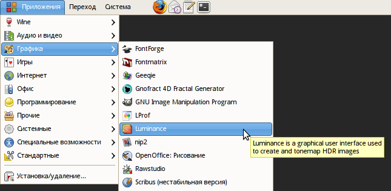
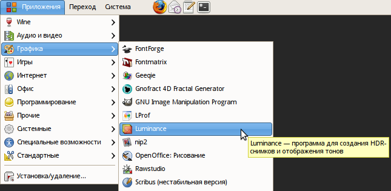

Luminance HDR uses Qt 6 Linguist and Qt translation files in the i18n directory. The full maintainer and translator workflow is documented in LOCALIZATION.md at the root of the source tree. It covers generating the English source file, using Qt Linguist, building translation files, validation, obsolete strings, plural forms, and the Transifex workflow.
On Linux systems .desktop files are used to build system menus that list applications available to users. Here is what it looks like in GNOME desktop environment:

Luminance HDR ships with such a file as well. It is located in the root directory with the source code and gets installed to /usr/share/applications or /usr/local/share/applications, depending on your preferences.
To get a localized menu entry, open net.sourceforge.qtpfsgui.LuminanceHDR.desktop as UTF-8 and add translated values such as:
Comment[LANG]=Create and tonemap HDR images
GenericName[LANG]=HDR imaging
Use a two-letter language code from ISO-639-1. Send the updated file through the GitHub issue tracker or as a pull request.
You should see something like this:

Clone the repository from GitHub, install Qt 6 LinguistTools, then follow the commands in LOCALIZATION.md. The old Subversion, qmake, and Qt 4 instructions have been removed.
Some translatable messages use variables like %1. Those are substituted by values at runtime. For example, in "Using %1 thread(s)" the variable is replaced with the number of threads. If you type these variables manually, you can make a mistake and the substitution will not work. It is better to copy the original text into the translation field in Linguist and then replace the words while leaving all variables intact.
Preserve keyboard mnemonics (&), Qt placeholders, and rich-text tags. Run python3 build_files/validate_translations.py before submitting a translation.
The documentation is inside the help directory. The English source is help/en; translated directories use two-letter language codes.
Start by translating menu.xml, then the HTML chapters. Preserve image paths and HTML structure. Keep illustrations below 800 pixels on the longer side so they fit in the help browser without a horizontal scrollbar.
See LOCALIZATION.md for build and validation steps.